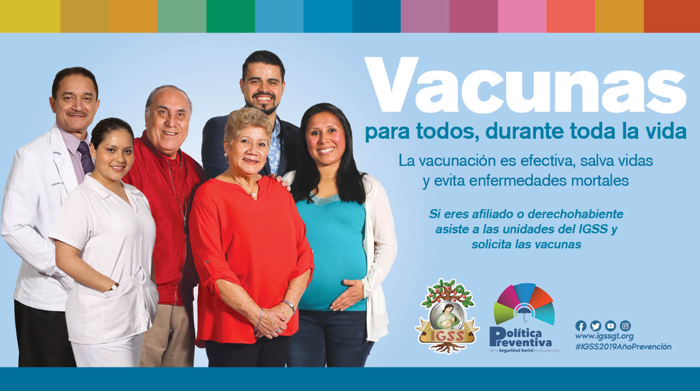
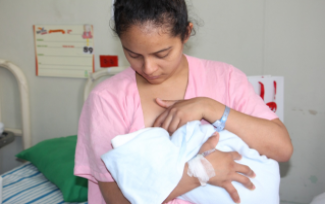
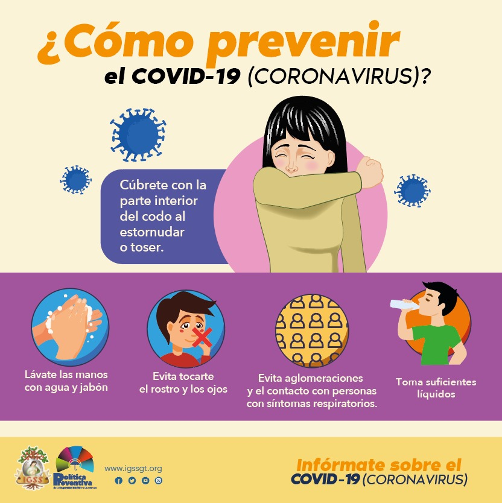

Contar con personal de vacunación a la mano ha facilitado la protección contra el COVID-19 de 1 millón 452 mil 937 ciudadanos, entre afiliados y derechohabientes del Instituto Guatemalteco de seguridad Social -IGSS-, y público en general.Una de esas estrategias del IGSS que ha jugado un papel determinante son las brigadas empresariales de vacunación, cuyo personal no ha escatimado esfuerzos de lugar, horario y día para llevar las vacunas a más guatemaltecos mayores de 12 años.
El temor por contagiar de COVID-19 a un bebé por medio de la lactancia materna es causa de duda entre las madres lactantes, por ello la nutricionista clínica Andrea Contreras, del Departamento de Pediatría y coordinadora del Comité de Lactancia Materna del Hospital General de Enfermedades del Instituto Guatemalteco de Seguridad Social (IGSS), abordó aspectos sobre el tema en el programa Con Criterio, de radio Infinita.“Mundialmente, ahora, se recomienda continuar con la lactancia materna, aunque se tenga COVID-19 o sospecha de contagio”, resaltó la especialista.
La Organización Mundial de la Salud (OMS) es la encargada de garantizar que cada ser humano esté protegido por vacunas seguras y eficaces, por ello ayuda a los países a establecer sistemas sanitarios rigurosos y dirige los protocolos para implementar los procesos de vacunación. La OMS ha fortalecido esa función durante la pandemia del COVID-19. Después de aprobar las diversas vacunas contra el nuevo coronavirus (SARS-CoV-2), deja a los gobiernos de los países, la potestad de elegir la más conveniente según las capacidades de cada uno de ellos.
